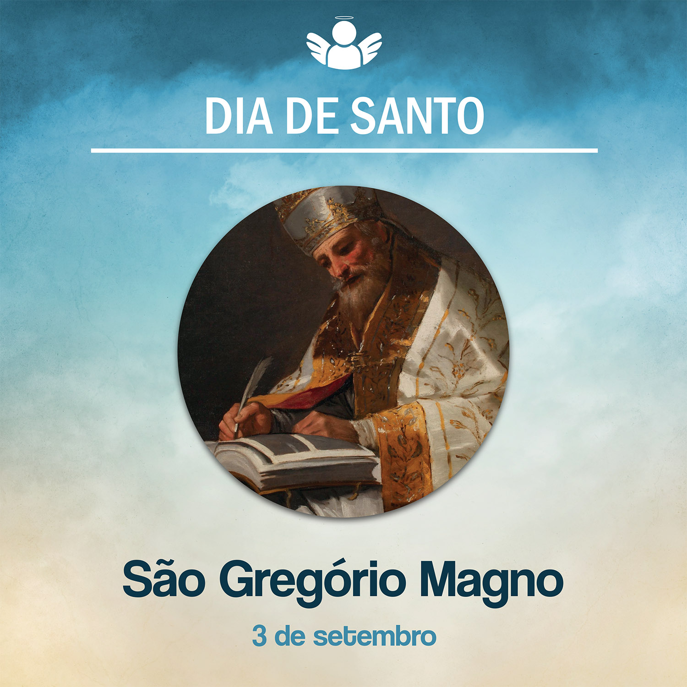

São Gregório Magno
03 de setembro de, 2020
Hoje, celebramos a memória de São Gregório Magno. Ele nasceu no ano de 540, numa importante família da alta corte romana. Sua educação foi num ambiente muito cristão. Seus pais, Jordão e Sílvia, e suas tias, Tarsila e Emiliana, deram todo suporte para sua formação, tanto cristã como cultural.
Foi num clima de renovação cultural na Itália que Gregório se destacou no estudo da gramática, dialética e da retórica. Seu pai participou do governo de Roma, como senador e prefeito. No ano 572, aos 33 anos, o futuro Papa assumiu como prefeito de Roma. Buscou ser um administrador justo e não abandonou a fé e suas práticas.
Agia contra a corrupção, fazendo uma política boa para os anseios do povo e sem buscar os próprios interesses. Doou aos monges que se refugiaram em Roma um grande palácio que lhe pertencia. Transformaram o palácio em um mosteiro ao qual denominaram Mosteiro de Santo André.
Após encerrar seu mandato de Prefeito, ingressou nesse mosteiro, tornando-se um monge beneditino. Foi enviado pelo então Papa Pelágio II a uma difícil missão em Constantinopla. Para combater as heresias que ameaçavam a fé cristã, começou a escrever parte de sua obra literária.
Morreu em 4 de agosto de 1859, aos 73 anos. Foi canonizado pelo Papa Pio XI em 1905. Recebeu, em 1929, o título de padroeiro dos párocos do mundo inteiro.
O que sua vida nos ensina? Foi um padre que abraçou com fidelidade sua vocação. Mesmo diante das dificuldades, não parou nelas. Fez um grande bem à Igreja no serviço espiritual, colocando-se a ouvir as pessoas. Por isso, reconhecendo esse grande santo confessor, também celebramos nesta data o dia do Padre.
Sucedeu a Pelágio II como Pontífice, em 590. No comando da Igreja, orientou a conversão dos ingleses e protegeu os judeus contra a perseguição dos hereges. Também enfrentou um período muito difícil em Roma: epidemias, inundações, fome e muitos mortos. Convocou todos os cristãos a fazer penitência e orações, caminhando em procissão até a Basílica de São Pedro.
Encerrou seu pontificado, falecendo em 12 de outubro de 604. Foi canonizado logo depois de sua morte.
Que contribuições Gregório deixou para a Igreja? Reformou o rito da missa, introduziu o canto específico para as celebrações, o famoso “canto gregoriano”. Deixou uma vasta obra escrita, entre sermões e comentários bíblicos.
Que contribuições Gregório deixou para a Igreja? Reformou o rito da missa, introduziu o canto específico para as celebrações, o famoso “canto gregoriano”. Deixou uma vasta obra escrita, entre sermões e comentários bíblicos.
O que nos inspira a vida de São Gregório Magno? Esse grande doutor da Igreja nos deixou um grande testemunho, de uma pessoa simples, que tinha muita sabedoria e caridade com os outros. Amou profundamente a Igreja e foi fiel na sua condução como pastor. Em suas cartas, ele se denominava o “Servo dos Servos de Deus”, título usado até hoje pelos Papas. É padroeiro dos músicos e dos cantores. São Gregório Magno, rogai por todos nós!